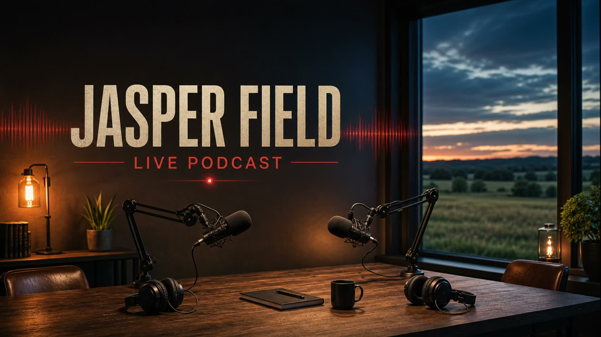

Album Launch / July 1, 2026
Analog Myth
Eight tracks about broken clocks, old rooms, girls camp, slow walking, and the light you bring back anyway.

Title Track
Analog Myth
Analog Myth is live on July 1. Start with Spotify, or keep the title-track video and full remastered playlist close by.
Release Facts
Album Details
- Release DateJuly 1, 2026
- ProducerLily Claw
- LabelLilyclaw
- Tracks8
- UPC883306680431
- Explicit LyricsNone
Track List
Eight Rooms
- 13
- Girls Camp
- Analog Myth
- Spilling the Tea
- No Mortgage
- Guards Down
- Slow Walk
- The Power of Light
Podcast Companion
The Clock Cannot Explain This
Jasper Fields sits down with Lily Roo for the full album play-through, with the songs inside the episode.
